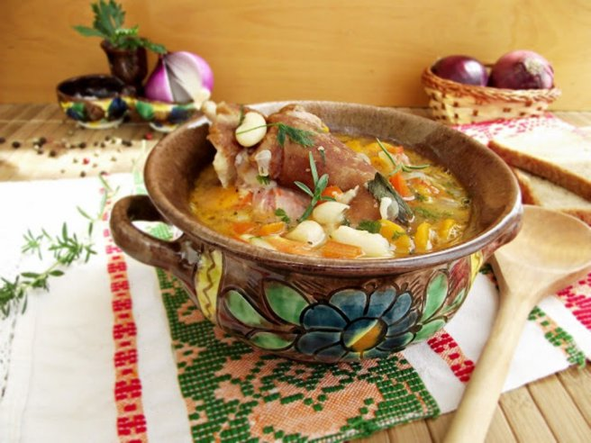

Home
Bean Soup With Smoked Pork Knuckles

Description
Bean Soup with Smoked Pork Knuckle is a staple Romanian soup made from dry white beans simmered slowly with root vegetables like carrots, celery, and onions. The centerpiece of the dish is a heavily smoked pork knuckle, which infuses the entire broth with a deep, rich, smoky flavor as it cooks until tender.
For some very mysterious reasons, it makes you fart. A lot.
Ingredients
- Beans (soaked overnight) and a smoked pork knuckle.
- Assorted chopped vegetables (such as onions, carrots, and peppers), bay leaves, thyme, and fresh parsley.
- Salt, pepper, sweet and spicy paprika, oil, and peeled blended tomatoes.
Steps
- Soak the beans overnight. Boil them, drain the water, and repeat the process once. Finally, cover with fresh water and start simmering.
- Cook the smoked knuckle separately in hot water until the meat is tender and nearly falling off the bone.
- Add most of the chopped vegetables, bay leaves, and thyme to the beans. After 15 minutes, add the knuckle along with its broth, plus salt, pepper, and one of the peppers.
- Sauté the remaining onions in hot oil with salt, pepper, and paprikas until translucent. Stir in the blended tomatoes, simmer for 7 to 8 minutes, and pour this sauce into the soup.
- Simmer everything together for another 5 to 6 minutes, adjust the seasoning if needed, remove from heat, and stir in the chopped parsley before serving.